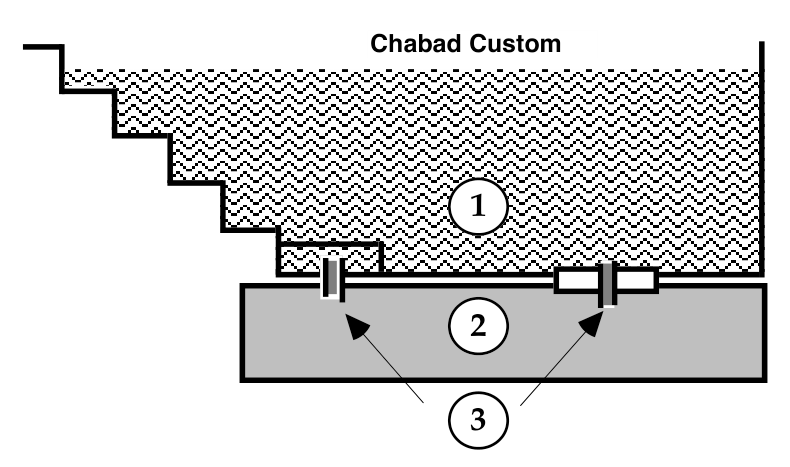
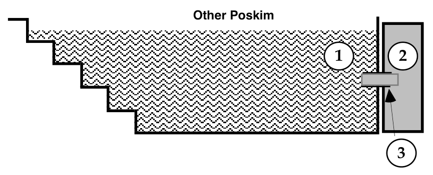

As stated above, only immersion in a kosher1Isoorei Biah 11:16, Mehaber 201:1. under competent rabbinic supervision causes the wife to leave her state. It is critical to know that bathtubs, swimming pools, or Jaccuzis of all types do not suffice. Even if she had waited five days, performed a , counted seven white days as required, but bathed in one of these, she retains her niddah state exactly as before.
In Jewish law there is room for immersion in natural bodies of water such as the ocean. There are numerous stipulations, not in the scope of this book. In the case where it is absolutely impossible to go to a mikveh and she must immerse in a natural body of water, she must do so only under the exact directions of an orthodox Rabbi expert in these laws. However, it must be emphasized that there are many stipulations to be clarified.
Following are important suggestions directed to those supervising the mikveh. They are meant to facilitate a more pleasurable and efficient experience for the women using the mikveh, as well as to lighten the job of those working there, making the whole experience as relaxed as possible.
Material
The following should be kept in abundant supply.
• Acetone for nail polish removal. Purchasing quality acetone, although more costly, is preferable. It lightens the wife’s work in removing her nail polish, alleviates the ‘Mikveh-lady’s’ helping her, and thus speeds up the efficiency of the mikveh. The acetone should be kept closed, to retain its strength. Bleach to remove stains from skin.
• Hand cream for women after their immersion, especially in the winter.
• Appropriate and sufficient mirrors should be supplied. Preferably the ability to view her back also (through two mirrors) should be offered.
The Building
It is important to design proper water drainage from the bathrooms. This will lighten the job of whomever is responsible for cleaning. It is also important to ensure that the sinks have working plugs. This is especially important to women with contact lenses.
Wise delegation of duties should be exercised regarding cleaning the bathrooms between women and at the end of the night. In mikvehs with a lot of clientele, one should weigh the wisdom of expecting the ‘Mikveh-lady’ to be responsible for this.
Working fans should be in place during the summer, as well as proper air circulation. Proper lighting is also important. The baths should not be too narrow, to ease use by larger women. Hand rails should be available to allow women to enter and leave the bathtub easily.
A menstruant doesn’t leave her menstrual state until she immerses. Even if a number of years have passed, she remains forbidden until entering a proper mikveh.
Shulchan Aruch 197:1
Definition
The mikveh is the single most important ingredient in the purification process. Yet only its most external component, the mikveh pool itself, is visible to the eye2Its distinction from a bath or pool is likewise not readily discernible.. The information in this chapter is presented for the reader’s information, although familiarity with it is unnecessary for immersion to be totally valid.
The word mikveh translates as a gathering of water. A mikveh, or a gathering of water, refers to naturally3As distinguished from drawn tap water called “mayim she’uvim”. falling rain water which has gathered in one place4See Directions for Mikveh Construction, printed in the end of Shulchan Aruch Admur Hazoken parts 5-6. See a letter from the Rebbe printed in Sharei Halacha Veminhag page 108.. Our sages fixed a minimum amount to this body of water as being that which the full body of a person can immerse in at one time. (This is the size of the otzar, as explained further.) Once this amount of gathered water exists, any amount of drawn tap water5As distinguished from naturally fallen rain water. can be added (or connected through pipes) to it and then this water too becomes “kosher” for immersion.
The Technique
Since it would be unhygienic to leave this gathered water all year long and impractical to repeatedly change it on a weekly or monthly basis, the following is done. At the time of construction, two separate components are built into the mikveh. On the bottom6Chabad custom is to build the otzar below; others build it alongside. or side (depending on which style mikveh is being built) is a saving pool—otzar, which is connected (through an aperture(s)) to the ritual bath—that part of the structure which is visible to our eye. This ritual bath is filled on a regular basis with clean tap water which, as stated above, thereby7By virtue of its contact with the otzar pool of rain water. becomes “kosher.” It is in this part of the structure that the woman immerses.
Chabad Custom
In mikvehs where the otzar is beneath the pool, the tap water immediately becomes “kosher” when it comes into contact with the otzar water8Note that the “otzar cover” is removed when filling the otzar with rain water, see Directions for Mikveh Construction (paragraph four), printed in the end of Shulchan Aruch Admur Hazoken (parts 5-6)., this contact continues through two apertures9Note that this is classified as otzar zriyah. “Regarding the mikveh: you wrote that they made an additional otzar on the side of the mikveh so that there should be a otzar zriyah. In truth according to the Rebbe Rashab’s mikveh, which is a ritual bath constructed above the otzar (according to the directions recorded by Rabbi Y. Landau) this is the best type of otzar zriyah, and it is superfluous to then have an otzar hashakah....” Part of a letter printed in Sharei Halacha Veminhag page 107. in the floor. Each aperture is one tefach by one tefach10Directions for Mikveh Construction, printed in the end of Shulchan Aruch Admur Hazoken parts 5-6..

The above diagram shows:
1) The ritual bath in which the tap water is filled; 2) The otzar—pool of rain water; 3) The connecting apertures. According to Chabad custom there are two connecting apertures, generally11See Mivneh Mikvaos Veheksharom page 51. one under the steps and one in the middle of a separating piece.
Advantages
There are a number of halachic advantages to this type of mikveh. One lies in the reduced intermingling of the otzar (rain water) and the ritual bath (tap) water. As stated, the otzar water validates the tap water. To do so there must remain a certain minimum amount of original naturally falling rain water. This design facilitates that, since the heated ritual bath water naturally remains above the cooler otzar water12This negates the Ravid’s contention “nason sah v’natol sah,” Shach 201:63. See Darchei Teshuva 201:128. See Directions for Mikveh Construction, printed in the end of Shulchan Aruch Admur Hazoken parts 5-6.. This difference in temperature, since warm water rises, helps reduce intermingling of water13“I was amazed to read what I saw in relation to the directions to construct the mikveh above the otzar. These instructions are from the holy and glorified Rebbe Rashab (the father of the previous Rebbe, my father-in-law) may the memory of the holy tzaddik be blessed etc. may his soul rest in heaven and protect us, who sacrificed himself for the mitzvah of mikveh, as was known in the last generation. Also the greatest Torah giants of his generation discussed these subjects with him at length. “Anyone who is expert in the laws of mivkehs knows that there are many advantages to this construction style (the ritual bath above the otzar)....” Part of a letter from the Rebbe printed in Sharei Halacha Veminhag page 106..
Secondly, this custom requires two apertures through which contact between the two waters is made, unlike other mikvehs, which require one. This is to ensure that even if dirt built up in one of them, making it less than the minimum diameter, the second one remains intact14See Directions for Mikveh Construction, printed in the end of Shulchan Aruch Admur Hazoken parts 5-6..
An additional requirement of this type of mikveh is that the otzar is twice the size normally required in other mikvehs, further ensuring that the minimum amount of rain water is constantly present.
The above represents halachic advantages inherent in the design of this mikveh. Mikvehs of other designs, if under constant orthodox supervision are, of course, totally acceptable.
Other Poskim
In mikvehs with the otzar15Mehaber 201:52, 53. on the side, a round hole, approximately three inches in diameter, is unplugged. This contact16Another type of otzar sees tap water being opened directly into the otzar. From there, the otzar overflows into the bath. This is called otzar zriyah “growing/ascending.” These are less common requiring additional supervision ensuring a halachically required minimum rain water remains present. With time this could present a halachic obstacle and is a problem according to the Rambam Hilchos Mikvoas 4:7 and the Raved brought in Shach 201:63. allows the “gathering of rain water” from the otzar to make the tap water kosher. The saving pool’s waters touch the mikveh’s waters and validates them for immersion. This hole should remain unplugged during immersion17Shach 201:112.. If, however, it was not unplugged, the wife should immerse again while it is unplugged, if this is not difficult18Shach 201:112. Note: “In answer to your question regarding discovering after immersion that the level of the water in the mikveh did not reach the connecting aperture: It is almost a surety that prior to this it was at that level and there was contact. It is hard to conceive that when those responsible filled up the mikveh they neglected to ensure sufficient height to allow contact. As is known, after contact was made, even briefly, according to many poskim there is then no halachic problem and the mikveh is kosher even in the first instance....” Part of a letter from the Rebbe printed in Sharei Halacha Veminhag page 105..
If necessary, unplugging this aperture is permissible on Shabbos19Darchei Teshuva 201:284..

The above diagram shows:
1) The ritual bath in which the tap water is filled; 2) The otzar—pool of rain water; 3) The connecting aperture.
Importance of Rabbinic Supervision
Orthodox rabbinic supervision is necessary:
- To make sure there are no leaks, with the passing of time, in the ceramic walls or the rain water reservoir (otzar), something which could invalidate its kashrus.
- To ensure that the apertures connecting the tap water in the bath with that in the otzar have a minimum opening.
- That the rain water reached the reservoir properly and there remains a required minimum amount of it.
- That it is clean from foreign objects.
- That the depth20Mehaber 198:36. “It is the community Rabbi’s responsibility to keep watch, on an ongoing basis, that the “Mikveh-lady” is supervising the women’s immersion according to halacha, and not to rely on his having given her one-time directions,” Pischei Teshuva 198:21. and temperature of the water are as they should be.
- That the building, especially its entrance, is situated so as to ensure maximum confidentiality for those using the mikveh21Ramo 198:48..
Although it is not the focus of this book to go into these, the importance of competent and vigilant rabbinic supervision also applies to innumerable other aspects of the mikveh.